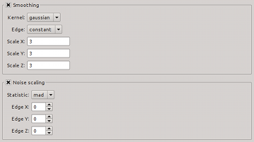

| Module / Parameter | Type | Values | Description |
|---|---|---|---|
| steps.doSmooth | bool | true, false | Spatially and spectrally smooth cube prior to source finding? |
| smooth.kernel | string | gaussian, boxcar, median | Type of smoothing kernel used in both spatial and spectral smoothing. |
| smooth.edgeMode | string | constant, reflect, mirror, nearest, wrap | Behaviour near the edge of the cube. |
| smooth.kernelX | float | ≥ 0.0; default: 3.0 | Kernel size in pixels for first coordinate. For Gaussian kernels the value refers to the FWHM. |
| smooth.kernelY | float | ≥ 0.0; default: 3.0 | Kernel size in pixels for second coordinate. For Gaussian kernels the value refers to the FWHM. |
| smooth.kernelZ | float | ≥ 0.0; default: 3.0 | Kernel size in pixels for third coordinate. For Gaussian kernels the value refers to the FWHM. |
| Default values are set in bold-face font. | |||
| Module / Parameter | Type | Value | Description |
|---|---|---|---|
| steps.doScaleNoise | bool | true, false | Normalise noise levels prior to source finding? |
| scaleNoise.statistic | string | mad, std, negative | Statistic used to measure the noise (median absolute deviation or standard deviation). |
| scaleNoise.edgeX | int | ≥ 0 | Size of edge (in pixels) to be excluded in first coordinate. |
| scaleNoise.edgeY | int | ≥ 0 | Size of edge (in pixels) to be excluded in second coordinate. |
| scaleNoise.edgeZ | int | ≥ 0 | Size of edge (in pixels) to be excluded in third coordinate. |
| Default values are set in bold-face font. | |||